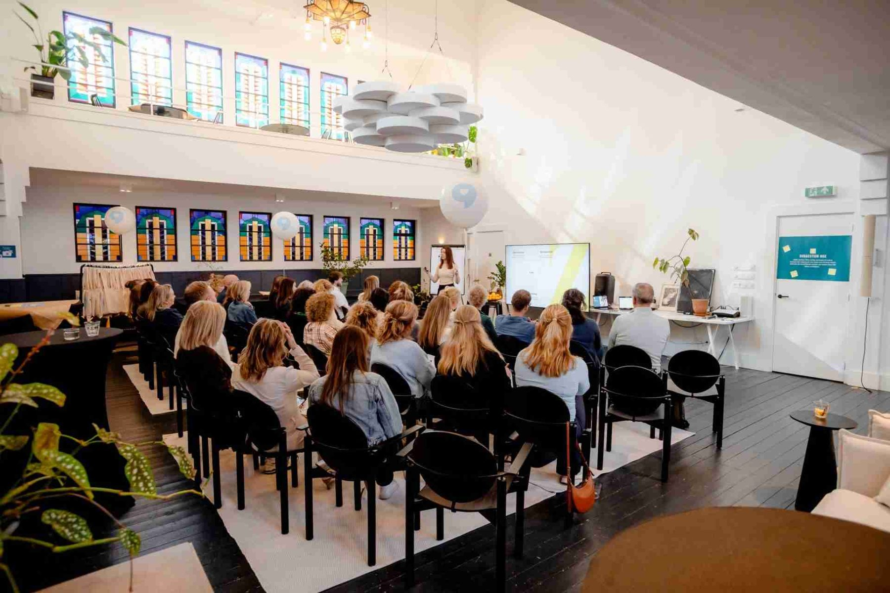
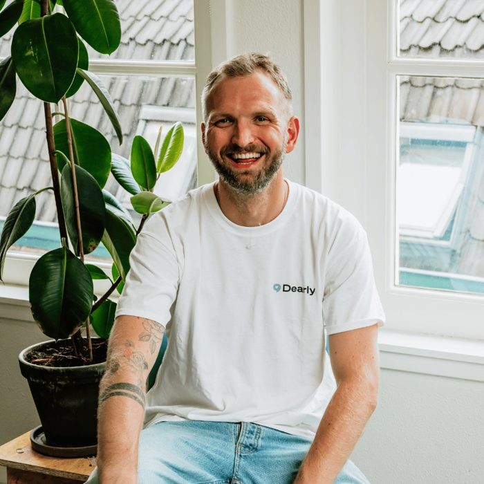
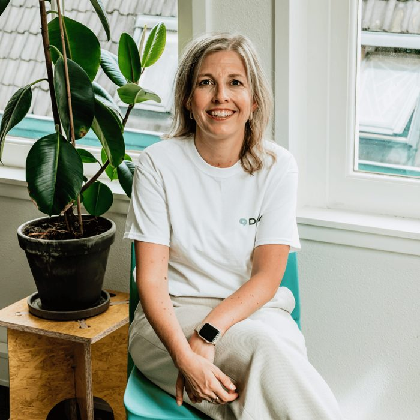

Over Dearly
Menselijkheid is de missie. Ingrijpende gebeurtenissen zijn het specialisme.
We helpen organisaties menselijk én professioneel om te gaan met ingrijpende gebeurtenissen, binnen en buiten het werk. Leiderschap en cultuur zijn daarbij de hefbomen.

Verlies hoort bij het leven. Dus ook bij werk.
Gedeelde verantwoordelijkheidDe organisatie neemt het initiatief. De medewerker hoeft zich niet alleen te redden.
Breder dan rouwZiekte, een ongeval, een reorganisatie, scheiding, mantelzorg, baanverlies. Verlies kent veel vormen, en soms is het werk zelf de aanleiding.
Leiderschap als hefboomEen leidinggevende die weet wat te doen, maakt het verschil tussen doorwerken en uitvallen.
Kwaliteit eerstErvaren begeleiders, getoetst bij intake, en altijd de juiste match.
Het team

Pieter van der Oest
Oprichter en directeur

Linda Tosserams
Adviseur rouw en werk
Mark van der Steenhoven
Techniek
Plus een netwerk door heel Nederland
Marlous van de BuntAnita van AmmersJorg VletterHelma Broers-KersbergenMarije CoxAbby van PuttenYvonne van HoudtCoosje WentinkDavid van SchaickElke te RaaijMarrit van ExelCindy SnijdersDaniella KeijsersTrudy SatinkAnnemarie Barmentlo


Doe je met ons mee?
Als organisatie, als leidinggevende of als begeleider. We vertellen je graag hoe.